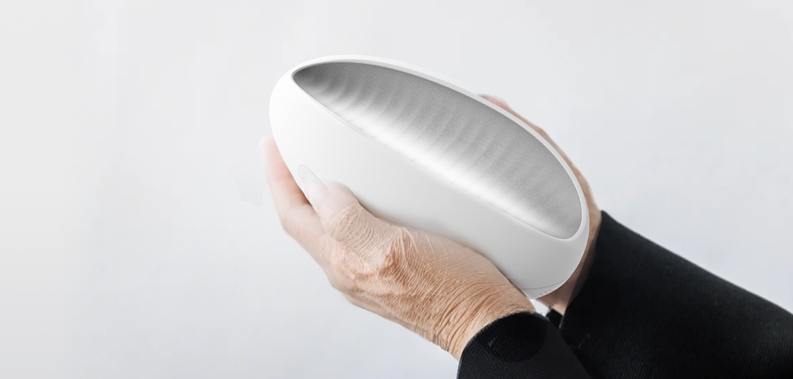

Storyteller
Staff / 参与者
LiangHou
Storyteller is an AI companion robot designed for hospice care, offering companionship while helping patients preserve meaningful life memories. Through ongoing conversations, it captures important experiences, emotions, and personal stories, using AI to transform them into a personalized digital life archive. After the patient passes away, Storyteller becomes a keepsake for their loved ones, preserving stories and memories while exploring the role of AI in emotional companionship, life storytelling, and digital legacy.
Storyteller 是一款面向临终关怀场景的 AI 陪伴机器人，旨在通过对话缓解患者的孤独感，并帮助他们记录珍贵的人生记忆。它通过持续交流收集重要经历、情感与故事，并利用 AI 将其整理为个性化数字生命档案。在患者离世后，Storyteller 可作为纪念载体陪伴家人，让珍贵的故事与记忆得以延续，探索 AI 在情感陪伴、生命叙事与数字遗产中的可能性。